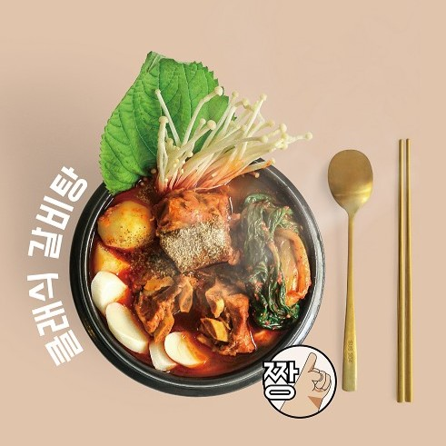
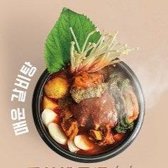
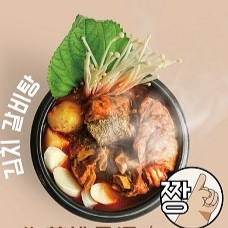
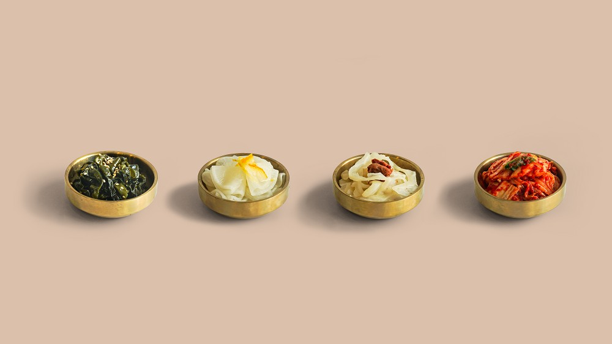
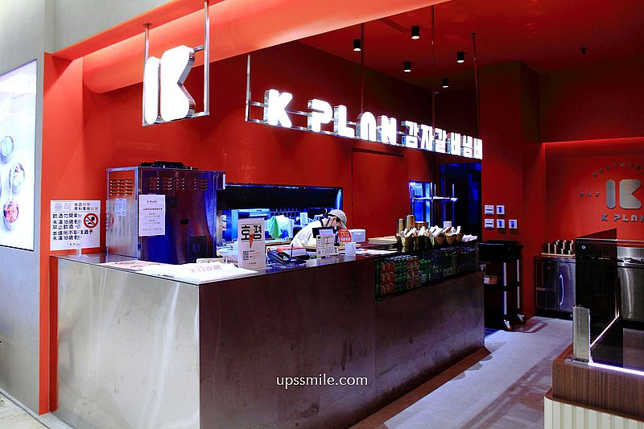

位於台北市信義區微風信義百貨4樓，忠孝東路五段68號
是一家專營韓式馬鈴薯排骨湯的知名韓式料理餐廳，主打正宗韓國烤肉和傳統韓國美食，吸引許多美食愛好者。這家店由知名品牌大師兄銷魂麵舖推出，專注於提供道地的韓式料理體驗。
招牌料理馬鈴薯排骨湯:融合了濃郁的豬骨湯底、馬鈴薯和豬頸骨，湯頭經過長時間熬煮，風味鮮美濃厚。
經典馬鈴薯排骨湯（350元）

香辣馬鈴薯排骨湯（380元）

泡菜馬鈴薯排骨湯（390元）

無限續加小菜：店內提供四款韓式小菜，包括泡菜、海帶、蘿蔔絲等，顧客可以無限享用。

裝潢風格

店內設計融合時尚感與韓式元素，運用灰色、橘色和金屬質感，營造現代且舒適的用餐氛圍。
以現代韓風設計，適合聚餐或家庭聚會。用餐環境乾淨舒適，服務周到。